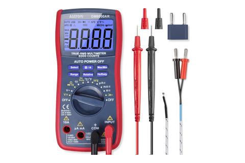
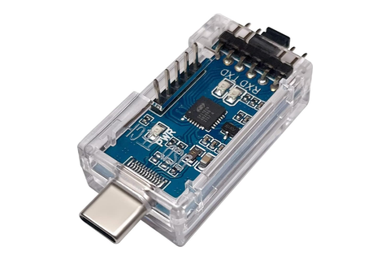

Electrical test
AstroAI meter, clamp, Kill-A-Watt · the gate in front of every energising
Tool station · 10/13Kitchen edition
The instrument here is an order, not a box.
Every check is cold — leads in Ω, the C14 off line — and each
one gates what follows: bonds before mains, the dielectric sweep before any DC
conductor lands, the three rails before firmware, firmware before the AC leg
ever closes.
Meter
AstroAI 2000-count
Cold check
Ω only C14 off line
Rails
12/5/3.3 V at the pins
Live
clamp + Kill-A-Watt
Gate
On the meter
Passes when
What it is really for
ContinuityES-04/05/07 WR-01/05 · CA-01
Ω · continuity beep
shelf on the bench, chassis unpowered
Every named leg end-to-end — each Wago to every out-leg, every
bonded surface ohms-low to the bus, every loom pin-to-pin
before a run is tied down, before a harness is bagged
A landed run is not a connected run. The meter is what turns the
schedule into a fact.
IsolationES-07 · WR-02/03
Ω · high range
C14 disconnected from line
H, N and G mutually open; every AC conductor to every chassis-ground
target reads open — no leakage path
relay #1 held closed, H–N reads the winding: 10–30 Ω for a 100 W hermetic
The last look before a DC conductor lands. Everything downstream
assumes it passed.
RailsFC-01
VDC at the pinbench PSU-controlled outlet, relay #1 de-energised
12 V± 0.2 V at the block,
5 V± 0.1 V at a V5 pin,
3.3 V± 0.05 V at a 3V3 pin
each verified before the next comes up; cold idle in the tens of mA
First power in the build. A rail out of tolerance kills the PSU and
sends the unit back.
DrawFC-05 · RL-08
Clamp round AC-4
Kill-A-Watt at the wall, inline meter on the PSU
A couple of amps RMS on the switched leg, within nameplate;
~1 A running at the compressor
the coil bump is ~70 mA on the 5 V rail as relay #1 makes
The two steps in the deck that run live — the relay makes, the
compressor draws, the probe is on the suction line.
⚠
Cold means off
line. The sweep runs with the C14 inlet unplugged and the meter in
Ω — nothing on the AC side is probed live. First power-on feeds
the inlet through the bench PSU-controlled outlet, never the wall
direct.
The other lead on this bench. The DSD SH-U09B3
carries the faucet display S3 into its ROM bootloader over UART0
(GPIO 43/44). The three flashes ride USB-C
— J14 on the board, the native CDC port on each display.
Every reading is written down as it is read: rail
voltages, the I²C ACK list, reed baselines, valve clicks, suction-line
ΔT — into the per-serial commissioning log.
Have in hand

AstroAI2000-count auto-rangeKill-A-Watt P4400bench AC power

DSD SH-U09B3USB-C to TTL, 3.3 V
Two risers, two readings — the chassis carries
nothing until the cold sweep reads open, and the AC leg waits on the rails
and a warm gas sensor.